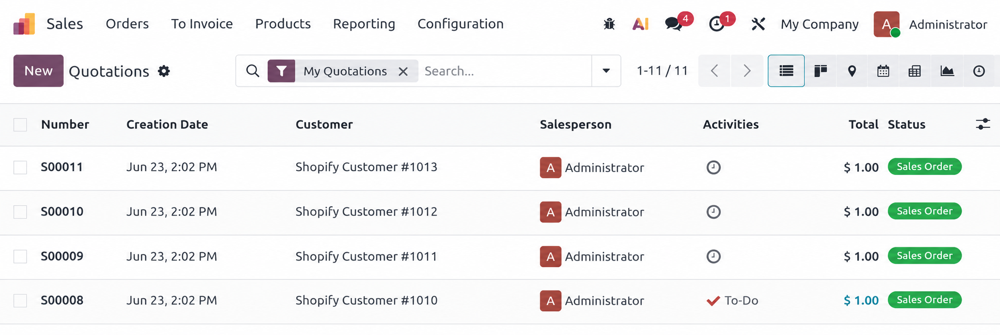
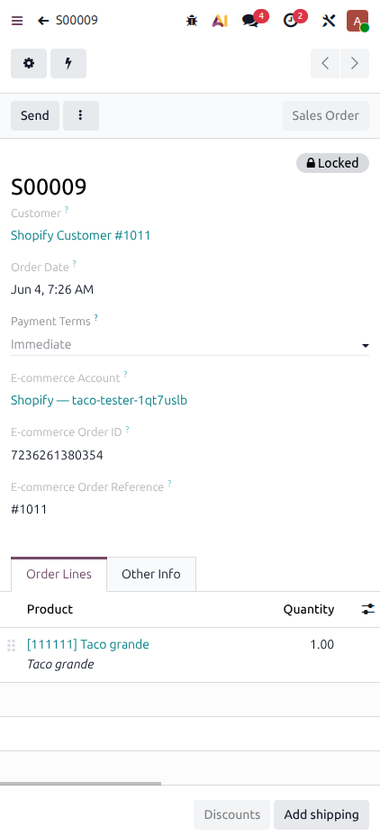
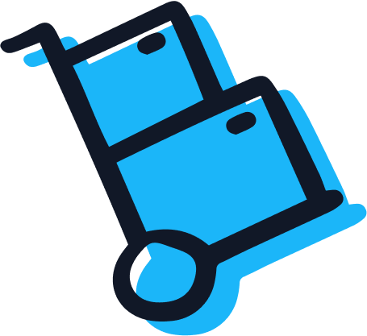

Shopify Connector for Odoo 19
Run your Shopify store, inventory, accounting, and deliveries all in one place


Unify your Shopify store and Odoo 19 with a robust, high-performance integration built on the latest GraphQL and OAuth standards for a future-proof commerce experience. The only third-party Shopify app supported by Odoo.
Built for businesses that want Shopify to work natively with Odoo, without fragile custom logic or upgrade risks.
Leverage Odoo apps to fit your business

Inventory Management
See every component and product flowing across your end-to-end inventory operation.

Clean books and accurate accounting
Experience effortless financial accuracy with intelligent payment journal splitting and seamless, automated tax synchronization between Shopify and Odoo.

Smarter Order Fulfillment
Fulfill orders from the right place every time. Sync stock and manage orders across multiple locations.
Scale with Multi-Company
Run multiple Shopify stores from one platform with automatic currency conversion and regional inventory tracking.
Choose your level of support
Purchase the app and self-manage the repository
1-hour free meeting with an expert, to get:
- A tailored demonstration
- Recommendations based on your needs
- Answers to your questions about Odoo
- Information about pricing & methodology
Purchase the app and pay for repository maintenance
- Receive customer support with Odoo experts
Try it out
Explore the module in action through the "Live Preview" option. You can access the full connector interface, configuration screens, synchronization settings, and operational flows using the credentials below:
- Username:
user - Password:
user
*This is a demo environment intended for evaluation purposes only. Data may be reset periodically.
How it works
Purchase
Complete your purchase from the Odoo Apps Store.

Import Shopify products to Odoo
Create your product catalog in Odoo first (with correct categories and taxes), then fetch from Shopify for SKU matching.

Connect accounts
Follow the setup instructions and complete your first sync steps.
Synchronization at a Glance
What syncs, in which direction, and how often.
| Data | Direction | Trigger | Frequency |
|---|---|---|---|
| Orders | Shopify → Odoo | Automatic or manual | Every 10 min |
| Products | Shopify → Odoo | Manual (Fetch Products) | On demand only |
| Inventory (Odoo → Shopify) | Odoo → Shopify | Automatic after order pull | After each order sync |
| Inventory (Shopify → Odoo) | Shopify → Odoo | Manual (Fetch Inventory) | On demand only |
| Fulfillments / Deliveries | Both ways | Automatic | Every 10 min |
| Returns | Shopify → Odoo | Automatic during order pull | Each order sync |
| Refunds / Credit Notes | Shopify → Odoo | Automatic during order pull | Each order sync |
| Invoices & Payments | Odoo (auto-created) | Automatic on paid order import | Each order sync |
| Customers | Shopify → Odoo | Automatic during order import | Each order sync |
Feature Details
Each section lists what the connector does and what it doesn't. Click any section to expand.
Connection & Authentication
Two authentication methods are supported depending on your Shopify store's creation date.
✓ What it does
- OAuth connection — Required for stores created on or after 1 January 2026. The store owner grants Odoo access via an approved authorization flow. API scopes cover Orders, Products, Inventory, and Fulfillments.
- Custom App (Admin API Token) — Available for stores created before 1 January 2026. Uses credentials from a Shopify Custom App. Access is limited to the scopes configured in that app.
✕ What it doesn't do
- Real-time sync — NO webhook-based sync. All synchronization runs on a scheduled cron job.
- Allow changes while connected — Account settings (warehouse, journals, taxes, etc.) cannot be changed while the connector is active. Disconnect, update the setting, then reconnect.
Multi-Store & Multi-Company
✓ What it does
- Multi-store support — Multiple Shopify stores can be connected under one or more Odoo companies.
- Separate configurations — Each Shopify store requires its own account configuration in Odoo.
- Multi-company environments — Supported with separate configurations per company.
- Independent sync tracking — Each account tracks its own sync timestamps and operates independently.
- Data scoping — Orders, products, and inventory are scoped to their connected store and do not bleed across accounts.
Product Synchronization
Products flow one-way only: Shopify → Odoo. Product data is never pushed from Odoo to Shopify.
✓ What it does
- Product import — Pulls products from Shopify into Odoo and maps them by SKU. If a Shopify SKU matches an Odoo product's Internal Reference, they are linked automatically.
- Auto-create products — Creates a new product in Odoo when no matching SKU is found and "Create Products" is enabled.
- Incremental fetch — Only products created or updated since the last sync timestamp are fetched, keeping sync efficient.
✕ What it doesn't do
- Push products to Shopify — Products cannot be created or updated in Shopify from Odoo. Product management must happen in Shopify.
- Map metafields — Shopify metafields are not mapped to Odoo fields.
- Import variants as variants — Shopify variants are not imported as Odoo variant lines. Each variant is created as a separate standalone product with its own SKU.
- Push categories or tax configuration — Product categories and tax configurations cannot be pushed from Odoo to Shopify. These must be set manually in Odoo, ideally before fetching.
Order Management
✓ What it does
- Order import (automatic) — Imports Shopify orders into Odoo on a scheduled basis as confirmed Sales Orders.
- Date-range order fetch — Manually fetch orders from a specific date range on demand.
- Customer matching — Matches Shopify customers to Odoo by email and billing name. Creates a new contact if no match is found.
- Currency detection — Automatically reads and applies the currency from each Shopify order.
- UTM tracking — Carries UTM campaign, source, and medium data from Shopify orders into the Odoo Sales Order.
- Order cancellation — Automatically cancels the Odoo sales order when the Shopify order is canceled. If delivery has already been created, a log note is added for manual review.
- Shipping line display — Shipping costs appear as a separate order line, with the customer's chosen carrier (FedEx, Shiprocket, Sendcloud, etc.) shown in the line description.
- Discount handling — Discounts are deducted from product or shipping prices before subtotal, minimizing rounding differences.
✕ What it doesn't do
- Apply regional pricelists — Odoo pricelists (per region or customer group) are not applied during order import. Pricing reflects the Shopify order value as received.
- Backfill missing UTM data — UTM fields will be empty if the original Shopify order did not include UTM parameters.
Inventory Synchronization
Odoo → Shopify (automatic): After each order pull, the free quantity (on-hand minus reserved) at the mapped Odoo location is pushed to the corresponding Shopify location.
Shopify → Odoo (manual only): Click "Fetch Inventory" under the Operations tab. On-hand quantity per product per location is updated in Odoo.
✓ What it does
- Inventory push (automatic) — Pushes stock from Odoo to Shopify automatically after each order sync.
- Inventory pull (manual) — Fetches current stock from Shopify into Odoo on demand via the Fetch Inventory button.
- Multi-location inventory — Maps multiple Shopify locations to corresponding Odoo stock locations.
- Granular sync controls — The Sync Stock toggle can be set per offer, per location, and per account.
✕ What it doesn't do
- Pull inventory automatically — Pulling stock from Shopify into Odoo is not automatic. It must be triggered manually. However, when a Shopify order is synced, the quantity is automatically deducted from the mapped location inventory.
- Sync products with disabled tracking — If inventory tracking is disabled in Shopify for a product or location, sync for that product will fail. Because inventory is batch-updated, it may block other products in the same batch.
Fulfillment & Shipping
Two fulfillment modes are supported:
- Handled in Odoo: Delivery is created in draft in Odoo. Once validated (with carrier and tracking number), a Scheduled Action pushes the shipment to Shopify every 10 minutes.
- Handled in Shopify: Fulfillment is created in Shopify and pulled into Odoo during sync.
✓ What it does
- Fulfillment sync — Syncs fulfillment status and tracking numbers between Shopify and Odoo.
- Split fulfillments — Handles orders fulfilled in multiple shipments, from different locations or with different carriers, including partial quantities.
- Automatic carrier mapping — Carriers are mapped and created automatically in Odoo if they don't exist.
- Two-way tracking numbers — Tracking numbers are synchronized in both directions.
- Location mapping — Fulfillment locations from Shopify are mapped to Odoo warehouse locations automatically.
✕ What it doesn't do
- Support custom fulfillment flows — Fulfillment flows outside of standard Shopify fulfillment are not supported.
Accounting, Invoicing & Payments
When "Create Invoice" is enabled, Odoo automatically creates and posts an invoice and registers payment for every order marked as fully paid in Shopify. Sales and payment journals can be configured per account.
✓ What it does
- Auto-invoicing — Creates and posts an invoice in Odoo when a Shopify order is marked as paid. If a product's invoicing policy is set to Delivered quantities in Odoo, the invoice is created only after delivery.
- Payment provider mapping — Maps Shopify payment providers (Stripe, PayPal, Razorpay, COD, Bank Transfer, etc.) to specific Odoo payment journals.
- Tax matching — Matches Shopify taxes to Odoo. Creates a new tax in Odoo if no match is found and "Create Taxes" is enabled.
- Rounding handling — Minor rounding differences between Shopify and Odoo totals are handled by adding a small adjustment line automatically.
✕ What it doesn't do
- Auto-invoice with rounding adjustments — Orders with a rounding adjustment line will not auto-generate an invoice, even if paid. These must be invoiced manually.
- Apply inactive taxes — Inactive taxes in Odoo cannot be applied to imported orders. Orders matching an inactive tax will fail and log an error.
- Auto-invoice when "Create Invoice" is disabled — If the setting is off, invoices and payments must be created and registered manually.
Returns & Refunds
Returns: Only returns with a "Closed" status in Shopify are synced. Each return is created in Draft state in Odoo for review before validation.
Refunds: Credit notes are created in Odoo from Shopify refunds, linked to the original invoice. The refund date from Shopify is applied as the credit note date.
✓ What it does
- Sync closed returns — Imports closed Shopify returns into Odoo as draft records for review before processing.
- Refunds → credit notes — Creates a credit note in Odoo when a refund is issued in Shopify, linked to the original invoice.
- Split returns — If Shopify creates a single return spanning multiple fulfillments, Odoo splits it into separate return records.
- Manual refunds — Manual refunds in Shopify (without return lines) generate a credit note with a single adjustment line.
- Refund total alignment — If the refund total differs from Odoo's calculated amount, an adjustment line is added automatically to match Shopify's figure exactly.
✕ What it doesn't do
- Sync in-progress returns — Returns with an "In Progress" status in Shopify are not synced. Only closed returns are imported.
- Sync returns when Odoo handles delivery — If delivery is managed in Odoo, Shopify returns do not sync automatically and must be processed manually.
- Auto-cancel synced returns — If a return is canceled in Shopify after being synced, Odoo will not cancel it automatically. An activity is created in Odoo for manual cancellation and stock adjustment.
- Create credit notes for unposted or multi-invoice orders — A credit note is only created if the order has exactly one posted (validated) invoice.
Monitoring & Troubleshooting
✓ What it does
- Email alerts — Sends notifications to the assigned Salesperson or Administrator when an order import, stock update, or fulfillment sync fails.
- Order recovery — Manually re-fetch a specific failed order using its Shopify Order Reference via the Recover Order action in the Cogs menu.
- API logs — Detailed API logs are available via the Logs smart button on the account (visible in Debug Mode — enable with Ctrl+K and type "debug").
- Scheduled activities — Activities are scheduled on records when manual intervention is needed (e.g., address mapping failure, cancelled return, missing refund data).
Functional Q&A
Quick answers for the most frequent functional questions that come up during pre-sales evaluations.
1 "Does the integration automatically map Shopify metafields to Odoo?" NO
2 "Does it support different pricelists per region or customer group?" NO
3 "Is synchronization real-time / webhook-based?" NO
4 "Can we push products from Odoo to Shopify?" NO
5 "Does inventory sync automatically in both directions?" PARTIAL
6 "Can we connect multiple Shopify stores to one Odoo instance?" YES
7 "Does it handle returns and refunds from Shopify?" YES
8 "Does it automatically create invoices in Odoo?" YES
9 "Can payment providers (Stripe, PayPal, COD) map to different Odoo journals?" YES
10 "Are Shopify product variants imported as Odoo variants?" NO
11 "Does it support split fulfillments with different carriers?" YES
12 "Can we track which marketing campaign drove a Shopify order?" YES
13 "Does the connector handle taxes automatically?" YES
14 "Can we change account settings (warehouse, journal) without reconnecting?" NO
Suggested Products


Getting Started
A complete step-by-step setup guide is available, covering OAuth configuration, Custom App credentials, warehouse and journal mapping, and running your first sync.
Setup Guide
Full configuration walkthrough including OAuth setup, Custom App credentials, warehouse mapping, journal configuration, and first sync steps.
Open Setup Guide →Custom Requirements
Need functionality beyond what's listed here? Custom development is available through Odoo's on-demand developer program.
Developers on Demand →Need help?
For onboarding, configuration, or support assistance, please schedule an appointment using the appropriate link below. Our team will guide you through the setup and help with any technical clarification.
For USA & Canada →Rest of the world →